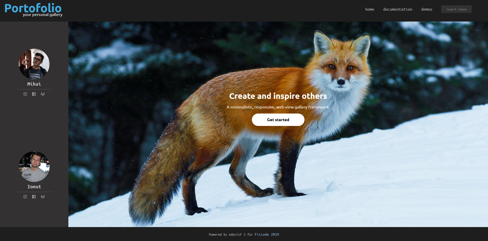

Projects
-
Non-Personal Gallery
Portofolio is a lightweight, responsive, highly-customizable content display framework and tool that makes it easier for you to get your content out there in a way that's accessible and beautiful.
 -
GitNephew
GitNephew is an website that uses GitHub API to track multiple users evolution through a time period. CRUD-based with JWT Authentication.

-
Quiz-a-quiz
Responsive & reactive Vue.Js Quiz Web Application that parses data from a custom API built with Flask that connects to an MySQL database.

-
Task Management App
Minimalistic Task Management Web Application with complete account support built using Flask. Uses JWT for Authentication and MySQL for storage.